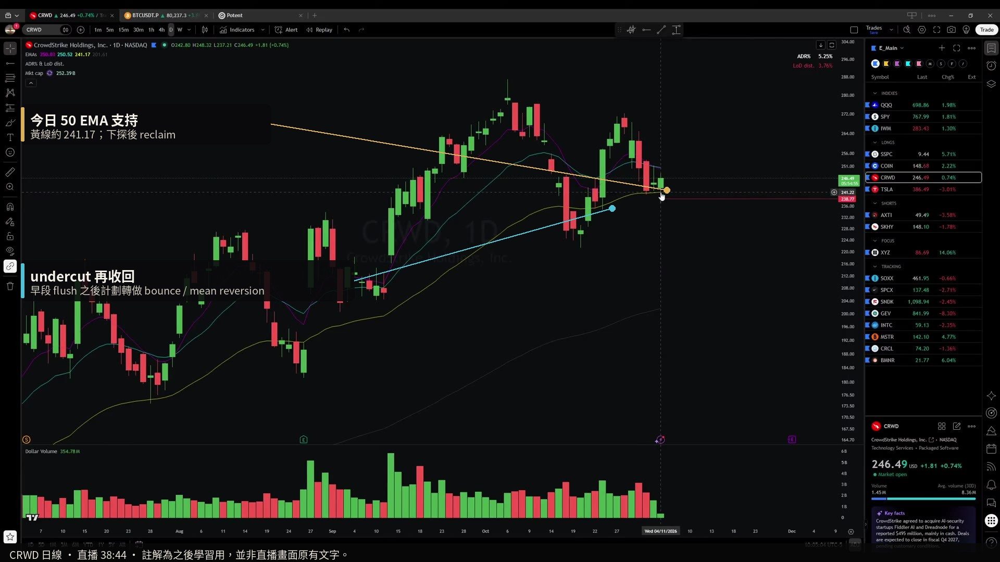
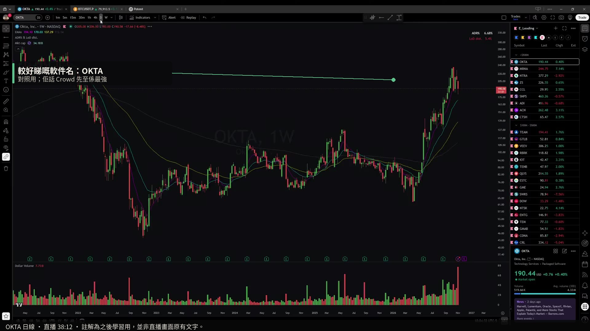
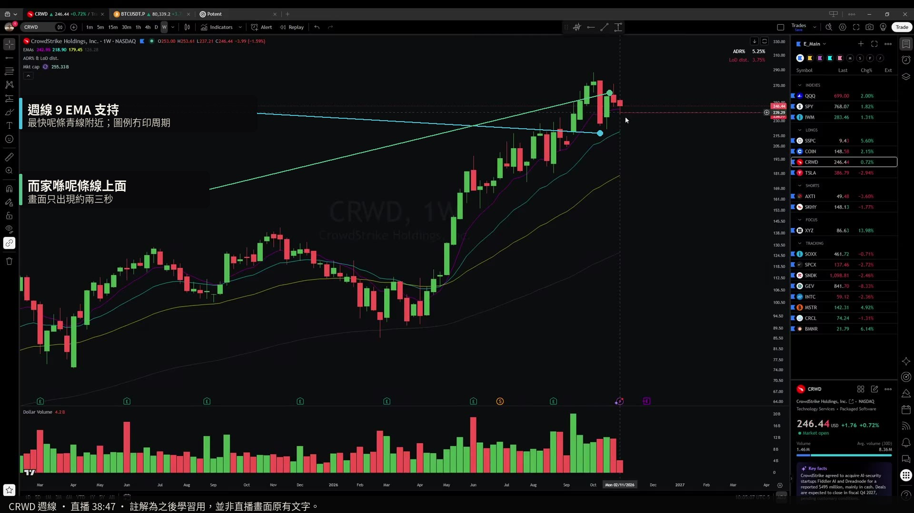

概要
計劃由想淡，轉做 bounce / mean reversion long
觀眾問 Crowd long 同 Coin long。Crowd 呢段，佢話而家係自己觀察範圍入面其中一隻最強嘅名字。今日早段 flush 之後 reclaim，計劃已經轉做向上嘅 bounce／mean reversion，而唔係喺呢次 shake out 或者 undercut-reclaim 之後仲想淡。軟件相對其他科技較強，資安由十月初大市轉弱以嚟整過底；Fortinet 差，OKTA 較好睇，Crowd 係當中最強。今日有 50 EMA 支持，週線有 9 EMA 支持。
圖一 · 主圖
CRWD 日線：今日 50 EMA 支持，下探後 reclaim
直播 38:44

原話
Can you explain your Crowd long and Coin long? Crowd, one of the strongest name right now in the universe. So like after today's early flush and then they reclaim, my plan is kind of shifted towards the bounce, like the mean reversion on the long side, instead of trying to short after this shake out or like the undercut and reclaim.
可唔可以解釋吓你嘅 Crowd long 同 Coin long？Crowd 而家係我呢個觀察範圍入面其中一隻最強嘅名字。今日早段 flush 之後佢哋 reclaim，我嘅計劃已經偏向做 bounce，即係 long 邊嘅 mean reversion，而唔係喺呢次 shake out 或者 undercut 再 reclaim 之後仲想淡。
點樣讀
日線低位 237.21 曾經低過黃線（約 241.17），收市約 246 已經收回。圖例冇印周期；註解按佢後一句「today we got the 50 EMA support」標呢條黃線位置。呢幅圖同時解釋點解計劃會轉：undercut 之後已經 reclaim，唔再當淡倉 setup。
YouTube 字幕係 early flash，Whisper 係 early flush。本頁用 flush，因為語境係早段下殺再收回。
圖二
OKTA：較好睇嘅軟件名，只用嚟對照
直播 38:12

原話
So I would like to pick one in the software sector, which is comparatively stronger than the other tech stocks, and among the software names, I think the cyber securities are getting a decent base. Since early October, when the market is starting to decline, I think the cybers are doing fine. Some are definitely, Fortinets are doing bad, but we got some better looking names like this, OKTA.
所以我想喺軟件板塊揀一隻，相對其他科技股比較強。軟件入面，我覺得資安最近有一個幾像樣嘅底。由十月初大市開始跌以嚟，我覺得資安都仲可以。有啲當然差，Fortinet 就做得差，但亦有較好睇嘅名字，例如 OKTA。
點樣讀
OKTA 只係對照，唔係呢段嘅主交易。佢隨即話細價資安／雲安全有啲做得好，但冇放入自己觀察名單；之後先指 Crowd 先至係最強。
圖三
CRWD 週線：9 EMA 支持
直播 38:47

原話
And among all those names Crowd is the strongest. So and today we got the 50 EMA supports, the weekly 9 EMA supports.
喺呢啲名字入面，Crowd 係最強。而且今日我哋有 50 EMA 支持，週線有 9 EMA 支持。
點樣讀
週線只停留約兩三秒（約 38:47–38:49），38:50 已經開始切走，所以本頁用 38:47，唔用 38:50。圖例同樣冇印周期，只標「佢口中嘅週線 9 EMA 就喺呢條最快青線附近」。
「今日 50 EMA 支持」主要仍然要對返圖一日線：低位下探黃線後收回。
附註
注意事項
- 圖上中文註解係之後加上嘅學習說明，唔係直播畫面原本已有嘅字。可用「原畫面」對返未加字嘅截圖。
- 畫面睇唔到成交價、倉位大細或者損益，所以本頁唔寫死呢啲數字。
- 圖例多數只有顏色同數值，冇印均線周期。本頁唔會把某條彩線寫死成某個周期；如果佢有講周期，只標「佢口中嘅位置就喺呢附近」。
- 原話來自機器轉寫（faster-whisper large-v3-turbo，並對照 YouTube 自動英文字幕），並非逐字人工校對。標點為閱讀而加。 「mean reversion」按 YouTube；Whisper 聽到 mini version。
- 39:41 之後佢同 chat 講「I'm selling Crowd / Crowd looks bearish」，自己解釋係想試吓有冇 algo 讀緊直播，並話 easily proven that's not true、just test it out in the market。呢段係玩笑／測試，唔係淡倉方法，所以唔獨立成科，亦唔當成短線賣出教學。
- 本頁只拆 Crowd long 論證（約 36:21–39:41），Coin long 見下一科之後嘅科目十一。冇混入其他系統或者規則。
免責聲明：呢份係教育拆解，方便之後 review 讀圖方法，唔係投資建議，亦唔好當作買賣指示。